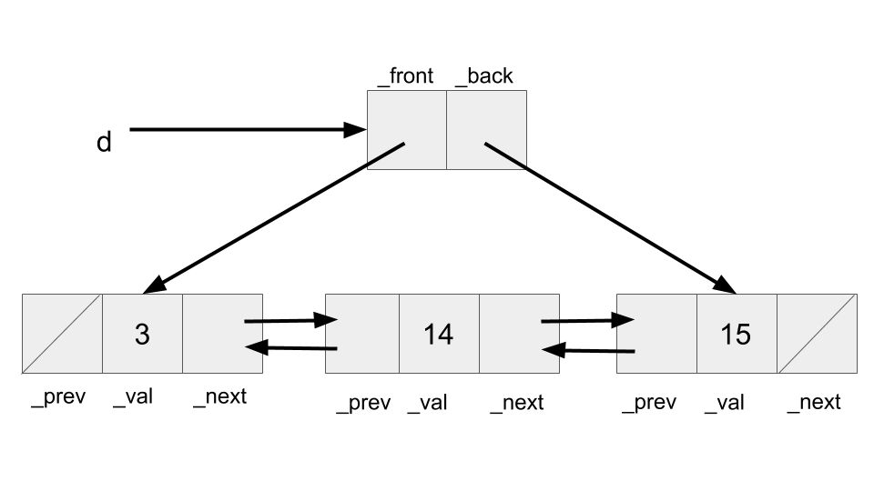
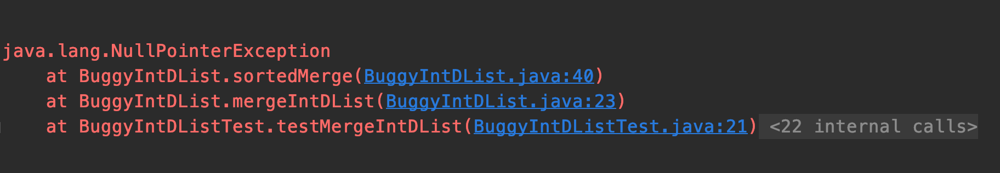
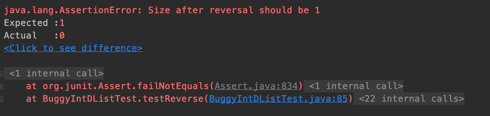

Unlike other labs which are usually due Friday the week they are assigned, Lab 3 will be due Monday 2/10 at 11:59PM.
Table of Contents
- Table of Contents
- A. Partner Labs
- B. Git Exercise
- C. Preliminaries
- D. IntDList Overview
- E. IntDList Practice
- F. Debugging Practice
- G. Submissions
A. Partner Labs
Again for this lab you will be able to work with a partner to complete the lab assignment, and forced to checkoff with a partner. Computer science is almost always a collaborative discipline, so learning how to work and code with others is an incredibly important skill to learn. Some important rules on working with partners are described below. Please make sure that you understand all of these policies so that you do not commit an act of academic dishonesty.
- Partnerships in this class are comprised of only two students. This means you are allowed to openly share code with only one other student in the class. Sharing code with more than your partner will be considered academic dishonesty. There will be no groups of three.
- Each student must submit their lab assignment, even if it is identical. If you do not submit the assignment and your partner does, you will not get credit for the assignment.
- You are highly encouraged to find your partner in lab. There will not be any formal partner matching or registration for the semester. This means that each week you could choose to work with a different partner. Later we will release a piazza post for people to find partners.
- For each week's lab, you must fill out the
partner.txtfile with your partner's name, SID, and @berkeley.edu email. We will use this to track your partnership information for each lab.
B. Git Exercise
By this point in the semester you have been using Git to track your work and submit your assignments. We realize that it is not always the most intuitive program to use, but hopefully you are becoming more comfortable using it. Additionally as we have been repeating you should have read sections A, B, C, and F of the Git guide. If you have not read this, please do so as it will help you with the checkoff.
In this lab checkoff, you will be working through a small Git workflow by setting up a Git repository (that will be separate from the repo you have been working in for the class so far) and making a couple commits to the repository. An academic intern or TA will look at the Git repository during checkoff to ensure that it is in a good state and then ask a few questions as well. Please do the following actions. If you’re stuck on a step at any point, don’t hesitate to ask a TA or an academic intern for help!
- Create a directory called
lab3-checkoff. The location does not matter that much, as long as it is not inside your exisitng git repositoryrepo. You will need to remember its location to be checked off. - Move into the
lab3-checkoffdirectory, and initialize a Git repository in this directory. Make sure you are in thelab3-checkofffolder before initializing the repository.. - Create a file called
61b.txtin any way you’d like. In this .txt file, add the text "61b version 1" into it. - Create another file called
61c.txtin any way you’d like. In this.txtfile, add the text "61c version 1" into it. - Begin tracking only
61b.txt, and create a new commit containing just this file, with the following commit message: "Add 61b.txt". - Make a modification in
61b.txtby changing the text in the file to: "61b changed to version 2". - Make another commit, this time containing both
61b.txtand61c.txt. The commit message should be: "Update 61b.txt and add 61c.txt". - Finally, make one more modification to
61b.txtby changing the text in the file to: "61b changed to version 3". Don’t commit this version.
At this point, if you were to type in git status, something close to this
should show:
/lab3-checkoff $ git status
On branch master
Changes not staged for commit:
(use "git add <file>..." to update what will be committed)
(use "git checkout -- <file>..." to discard changes in working directory)
modified: 61b.txt
no changes added to commit (use "git add" and/or "git commit -a")Also, if you were to run git log, something close to this should show:
/lab3-checkoff $ git log
commit 73ee111697ebbc9ab998c9abb89c82740f1b649c (HEAD -> master)
Author: Matthew Owen <omatthew98@berkeley.edu>
Date: Mon Feb 3 22:55:28 2020 -0800
Update 61b.txt and add 61c.txt
commit d4b2e3d8a7cac20f9b7356217b07b263daddd721
Author: Matthew Owen <omatthew98@berkeley.edu>
Date: Mon Feb 3 22:52:45 2020 -0800
Add 61b.txtIf the output of these two commands does not roughly match the above, it is probably easiest to just delete the lab3-checkoff folder and start again. If you have questions again you can work with your partner or ask for help from any available lab staff.
Be sure to save this repository and directory until you get checked-off by an academic intern or TA. If you have not already been working with a partner, find a partner to get checked off with. We will be using the online office hours queue, and only one person of your pair should add themselves to the queue. Please make sure to select the room correctly, or you might be skipped. After you have been checked off you will be given a magic word which you should enter into the file checkoff.txt (this file will be in the lab3 and won't appear until you have fetched and merged the files). While you are waiting to be checked off, you should continue on with the rest of the lab as it is completely independent of this checkoff.
Along with other short conceptual questions involving Git, you will be asked to revert 61b.txt back to the version in the most recent commit, as well as back to the earliest version of the file, so make sure you know how to do this! Hint: Look into the checkout command documented in the Git guide.
Note: Be careful when using the checkout command, as your repo might end up in an unexpected state. Specifically, if you see something about your repository being in a detached HEAD state as a result of a checkout command, that is something we don't want. To get out of a detached HEAD state and go back to master run the command git checkout master.
C. Preliminaries
As usual, you can retrieve the files for this lab (after first using git status, git commit, and git push to make sure you have cleaned up, committed, and pushed everything that needs it) with
$ git fetch shared
$ git merge shared/lab3 -m "Start lab3"
$ git pushThis will add shared/lab3 to your current branch (in this case, master). When opening the project in IntelliJ, remember to add the libraries through File -> Project Structure -> Libraries -> +, then select the lib folder in cs61b-software.
When you are ready to submit your work, commit and push everything, and then use
$ git tag lab3-1 # Or whatever sequence number you get to
$ git push
$ git push --tagsIf you want to download lab3 in another local repository (e.g., you started on the instructional machines and now want to work entirely on your own laptop) then go into this other repository (presumably cloned from your central cs61b repository) and (after committing and pushing anything you already have there) run
$ git pullD. IntDList Overview
In class, you've seen what is called a singly linked list,
IntList. The term singly linked refers to the single pointer (or link),
.tail, used to traverse the elements of the list. For this
problem, we'll define a new data structure, the IntDList, which uses a
doubly linked list.
The IntDList class uses another internal data structure, called a
DNode, to actually house its data. Read through IntDList.java to see why
we refer to this as an internal data structure!!! Each DNode has two pointers, _prev and _next. _prev points to the previous DNode in the chain, and _next points to the next DNode in the sequence. Each Dnode also stores a value, called _val.
Note that the IntDList itself contains two pointers, _front and _back. _front points to the first DNode in the chain and _back points to to the last. For example, if d were an IntDList, this is how we could represent the sequence [3, 14, 15]:

Note that the pointers in this diagram point to the entire boxes they are directed towards, not just the smaller boxes within. Thus, _front points to a DNode whose _prev is null, _val is 3, and _next points to a DNode whose _val is 14. If we wanted to get 14, we could say either _front._next._val or _back._prev._val.
Self Test - To help ourselves work with IntDLists, answer the following question: What are the data types for _front, _back, _prev, _next, and _val? Hint: 4 of them share the same type.
Answer - _front, _back, _prev, and _next have type DNode, and _val has type int.
As you can see, unlike IntList, there's an extra level of
indirection at work here. The user (or client) of IntDList
doesn't see the actual DNodes that hold the data. This has various
advantages. One of them is that the client can now do operations that modify
the list without having to return and reassign its value (that is, we
can use void methods to insert and delete things). That's because
we never change the pointer to the IntDList itself; we only modify
its fields. Another is that we can change our implementation of our IntDList without requiring that anyone change the way they use our IntDList class.
Reflecting on our current design, is there anything that can be simplified? It seems like our IntDList stores a pointer to a "next" node (_front) and a pointer to a "previous" node (_back). Could we instead have our IntDList only store a pointer to a special DNode, whose _next points to whichever _front would've pointed to and whose _prev points to whichever _back would've pointed to? This is called a sentinel node. The doubly linked list with a sentinel node is typically used in practice as the linked list representation, like in Java's own standard library class, java.util.LinkedList. While you won't be implementing this exact design today, it's good practice to reflect on the pros and cons of our current design, and the implications on performance and development.
If you are still unsure about IntDLists, here are some slides describing the above information with more graphics.
E. IntDList Practice
This lab has two parts: IntDList Practice and Debugging Practice. When you fetch the skeleton code, you should see 4 java files:
IntDList.javaIntDLIstTest.javaBuggyIntDList.javaBuggyIntDListTest.java
For part 1, we will be implementing some basic methods dealing with size, insertion, deletion and string representation of IntDLIst.
You are supposed to fill in the following methods in IntDList.java. Tests are in IntDListTest.java. Note that some tests will not work until you implement insertBack which the IntDList constructor depends on.
get: should return the element at specified indexisize: should return the number of elements in the IntDListinsertFront: should insert the new element at the front of the listinsertBack: should insert the new element at the end of the listdeleteFront: should delete the element at the front of the list and return the valuedeleteBack: should delete the element at the back of the list and return the valuetoString: should return string representation of the IntDList in the form[]for empty list or[1, 2]for list with elements etc. This method can be a bit tedious to implement, so we have provided the below implemention for you to use, however you do not have to use this if you do not want to.public String toString() { if (size() == 0) { return "[]"; } String str = "["; DNode curr = _front; for (; curr._next != null; curr = curr._next) { str += curr._val + ", "; } str += curr._val +"]"; return str; }One of the two following methods:
insertAtIndex: should insert the new element at the specified index (including front and back). After insertion, the element should be at indexiand the successive elements (if any) would have been shifted right by 1 index position.deleteAtIndex: should delete the element at the specified index (including front and back) and return the value. After deletion, the successive elements (if any) would have been shifted left by 1 index position.
While we haven't explicitly talked about String very much, treat this as an exercise in asking your peers, academic interns, TAs, or the internet for advice. Note that the IntDList constructor calls insertBack, so you will need to implement insertBack before
running any unit tests in the IntDListTest class.
F. Debugging Practice
We're going to go through a short debugging exercise in BuggyIntDList.java.
There are 2 files involved here.
BuggyIntDList.java, which contains two buggy methods:sortedMergeandreverse. You will be tasked with fixing at least one of these two methods.BuggyIntDListTest.java, which contains set of tests for these buggy methods. Once these methods are fixed correctly, all of the tests should pass.
Let us go over what is the expected behavior of these methods:
mergeIntDLists: Merges two sortedIntDLists into a single sorted IntDList by callingsortedMerge. This is a driver method that just callssortedMergemethod with frontDNodes of bothIntDLists. After the sort, the callingIntDListconsists of the resulting sorted and mergedIntDList.sortedMerge: performs a sorted merge by comparing the twoDNodearguments and creating a single sorted list by manipulating_prevand_nextpointers.reverse: Reverses the contents of IntDList on which it is called.
For this part of lab, you are supposed to -
- Either Replace a single line marked with
// FIXME:annotation. - Or Write few lines of code in the designated space marked with
// --- WRITE ADDITIONAL LINES OF CODE --.
NOTE: DO NOT modify any other lines or write your own code in non-designated space in order to make test cases pass. The autograder will fail and you will lose points unnecessarily.
Now try running the main method in BuggyIntDListTest.java and see what the output is in Run window. You will observe that the two test cases testReverse and testMergeIntDList have failed with some problems.
Click on testMergeIntDList with a red exclamation sign in left pane. You will see the following details:

There are a few important things to note here. First, we can read the type of exception that was thrown - NullPointerException. To read the Oracle docs on what a NullPointerException is, take a look here.
To summarize what they say, a NullPointerException is thrown when null is used where an object is required (for example, trying to call an instance method of a null object, or accessing or modifying the instance variables of a null object).
Self Test - If we have a box and pointer diagram as we did above, would executing _front._prev._val cause a NullPointerException?
The diagram is displayed again here for your convenience:
Answer - Yes. _front._prev is null, and trying to access an instance variable of a null object causes a NullPointerException.
Next, we can see the stack trace. This is a listing of all functions that were called before the exception was thrown.
The stack trace can be read chronologically from bottom to top - that is, first the method testMergeIntDList was called, and then mergeIntDList was called, and then the method sortedMerge was called.
Since sortedMerge is at the top of our stack trace, we know that it was this function in which the exception was thrown. The stack trace also provides us the exact line numbers where functions are called.
If you'd like, take a look at this Stack Overflow Post on what a stack trace is.
Use the stack trace, along with the skeleton code provided to you to fix the sortedMerge method in BuggyIntDListSolution.java.
Once you understand what a NullPointerException is, the next question is why would this occur? To answer this, use the IntelliJ Debugger and set a break point at the line 33 in BuggyIntDList.java which is sortedMerge method and click Debug in Run menu.
If you'd like to review using the IntelliJ Debugger, take a look at lab2.
It also highly recommended that you understand how to efficiently debug your code using breakpoints, Step Over, Step Into and Step Out functionality in IntelliJ.
We have put up a Debugging Guide for easy reference. Make sure you go through it if you do not understand how to debug code. We will be using this guide as reference in all the future labs, homeworks and projects.
After putting this breakpoint and running the debugger, you will find that you have to keep doing Step Over or Step Into for many many times to reach to the source of Exception.
Such scenarios can be easily avoided by conditional breakpoints. Go through the debugging guide to understand how to use conditional breakpoints. Think of the condition would be best suited for this breakpoint.
Now that we know the error, and the line the error occurs on, we need to reflect on what could be causing this error. Are we trying to access an instance variable of a null object?
Now that we understand what the error is, and why the error occurred, we can start to think about fixing it. Write additional lines of code in the designated space (if needed) to fix the problem.
After the problem is fixed try running the tests again to see if the method is performing its functionality correctly. There are multiple issues with the method and might need more than one changes to be fixed.
Let us now move on to reverse and understand what the test failure means:

We observe that the test is marks with a yellow cross in left pane of debugger window instead of a red one. It indicates that the test was able to run successfully without any exception, but is not performing as expected.
Try drawing a box and pointer diagram, or using the Java Visualizer (see lab2 for more information on how to use it). When does this error occur, and what would be the simplest fix?
To check that your reverse implementation is correct, complete the following tasks:
- Draw a box and pointer diagram (or use the visualizer) to see what your code is doing, and verify you are assigning all pointers correctly.
- Write your own comprehensive tests to verify the functionality of your code.
Although not required for this lab, you are encouraged to write your own unit tests by creating new java files named MyIntDListTest.java or MyBuggyIntDListTest.java if you feel like it.
Writing proper and comprehensive unit tests is essential in making sure that your methods have been correctly implemented and working as expected for various scenarios which we call edge cases.
Make sure to submit those files as well, if you end up creating more tests.
G. Submissions
You will be turning in IntDList.java, BuggyIntDList.java, and checkoff.txt from the Git checkoff. Additionally, you will also be turning in partner.txt with your lab partner details just like Lab 1.
You should've filled out the following methods in IntDList.java:
getsizeinsertFrontinsertBackdeleteFrontdeleteBacktoString(implementation provided above)One of the two following methods:
deleteAtIndexinsertAtIndex
Additionally, you should have fixed at least one of the following buggy methods in BuggyIntDList.java:
sortedMergereverse
In other words, you can fail one test total in IntDListTest and one test total in BuggyIntDListTest to get full score on this lab.
Make sure all the tests in IntDListTest.java and BuggyIntDListTest.java are passing before submitting your code.
NOTE: DO NOT make any changes in IntDListTest.java and BuggyIntDListTest.java files.
You do NOT need to submit the lab3-checkoff folder in any way. Submitting checkoff.txt is sufficient to get credit for the Git checkoff.
As usual, add your files, commit, and tag the commit. Push your commits to your central repository, then don't forget to push your tags by running
git push --tags